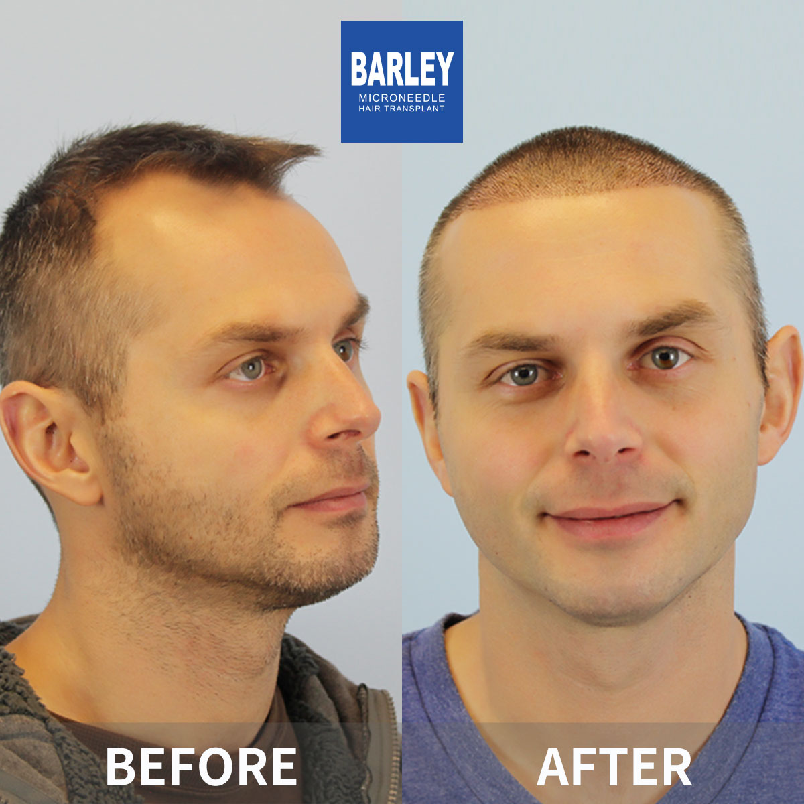
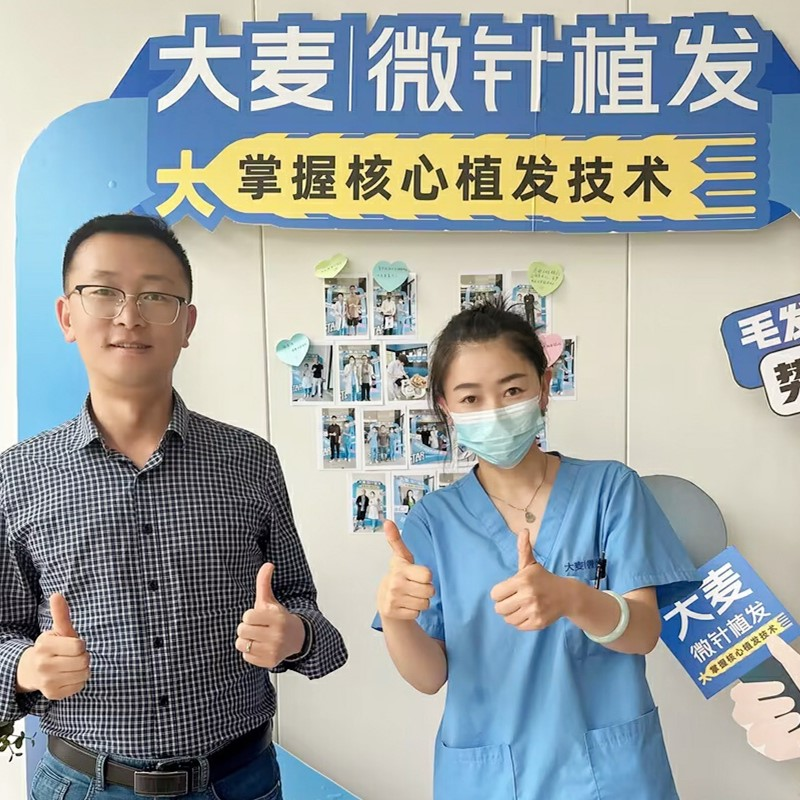

藝術性的鬍子與落腮鬍移植，呈現男性化、自然的效果

我們的鬍子移植手術結合外科專業技術，打造男性化、自然的鬍子與落腮鬍。無論你想要填補稀疏區域、創造更豐滿的鬍子，或是達成理想的鬍子密度，我們的專業團隊都能幫助你達成完美的臉部毛髮目標。
為你的臉部骨骼結構量身訂製的鬍子移植
藝術與落腮鬍呈現完美效果
根據你的目標與臉部特徵進行個人化鬍子設計
精準繪製你理想的鬍子與落腮鬍造型
從供體區域精選摘取毛囊
遵循自然鬍子生長模式的精準切口
個別種植以達成完美密度
完整護理與12個月追蹤計畫
業界領導者，效果有證實
自2006年起即為微針植髮技術的先驅與領導者
遍及中國各大城市，均維持相同高標準
創新的微針與種植筆技術，呈現卓越效果
深受全球患者信賴，帶來改變人生的效果
在整個治療過程中為國際患者提供完整英文支援
最先進的設施與嚴格的安全規範，讓你安心
看看我們患者達成的驚人轉型



與我們滿意患者共度的時刻

成功手術後與我們醫療團隊合影

與我們醫師一同慶祝絕佳效果

又一位滿意患者分享喜悅

患者出院前與我們專家合影

開心的患者與陳醫師在治療後

興奮的患者展示新樣貌
聽聽全球各地滿意患者的心得
"在Google搜尋「植髮推薦」找到大麥，他們的微針植髮技術太厲害了！效果非常自然，我的自信心終於回來了。大麥真是台灣植髮的好選擇！"
"香港植髮診所我比較了好多家，最後選了大麥。從諮詢到手術全程都很專業，醫師團隊很有經驗，真的很推薦給需要的朋友！"
"I came from the US to Shanghai for the surgery, and every step of the journey was worth it. The microneedle technology is incredible, and recovery was much faster than I expected!"
"在Bing上看到大麥植髮的評價很不錯，過來做了FUE植髮。價格合理，效果又好，毛囊存活率很高，真的是澳門植髮的優質選擇！"
"中國台灣植髮價格很貴，專程來到大麥做無剃髮植髮。360度種植筆做出來的髮際線超自然，朋友們都看不出我有植髮，太值得了！"
"18年經驗加上10萬多個成功案例，大麥植髮真的很有說服力。我的頭髮加密效果很自然，就連理髮師都看不出痕跡，太感謝了！"
體驗我們現代舒適的設施

我們最先進的設施

在我們頂級休息室放鬆

無菌且先進

隱私且專業

舒適的術後空間

歡迎的入口
找到關於植髮的常見問題解答
聯絡我們進行免費諮詢
15810155700
+86 13730143529
hairtransplant@qq.com